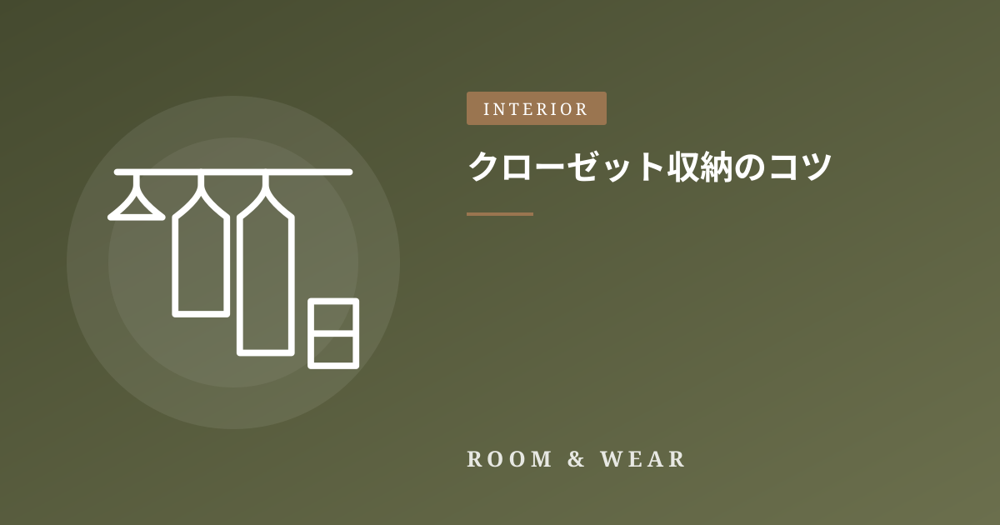

クローゼット収納のコツ。服を見やすく、取り出しやすくする方法

※この記事にはアフィリエイトリンクが含まれています（広告について）。
クローゼットを開けるたびに服が見つからない、詰め込みすぎて扉が閉まらない……。そんな悩みは、収納のルールを少し決めるだけでかなり解消できます。
まずは服の量を見直す
収納のコツの前に、1年以上着ていない服やサイズが合わない服は、手放すか別の場所に移しましょう。ハンガーの間に指1本分のすき間ができるくらいが、取り出しやすい量の目安です。
ハンガーをそろえる
形や色がバラバラのハンガーを、同じ種類にそろえるだけで見た目が整います。薄型のすべりにくいハンガーなら、省スペースで服がずり落ちにくくなります。
掛ける順番を決める
左から「アウター→ジャケット→シャツ→パンツ」のように種類ごとに並べ、同じ種類の中では色の濃い順に並べると、探しやすく見た目もすっきりします。
下の空間を活用する
掛けた服の下には空間ができやすいので、引き出し式の収納ケースを置いて、Tシャツやニット、下着などを入れましょう。中身が見える半透明か、ラベルを貼れるタイプが便利です。
上の棚は「たまに使う物」
手が届きにくい上の棚には、シーズンオフの服や、たまにしか使わないバッグなどを、取っ手付きのボックスに入れてしまうと出し入れが楽になります。
小物は扉の裏や仕切りで
ベルトやネクタイ、帽子などの小物は、扉の裏に付けるフックや、仕切り付きのケースにまとめると迷子になりません。
まとめ
「量を減らす」「ハンガーをそろえる」「並べ方を決める」の3つで、毎朝の服選びがぐっと楽になります。
この記事に関連するアイテムを探す
Amazonの検索結果ページに移動します。条件に合う商品を比較してお選びください。
- すべらない薄型ハンガーAmazonで商品を探す
- 引き出し収納ケースAmazonで商品を探す
- 取っ手付き収納ボックスAmazonで商品を探す
価格・在庫・仕様は変わることがあります。購入前にAmazonの商品ページで最新の情報をご確認ください。